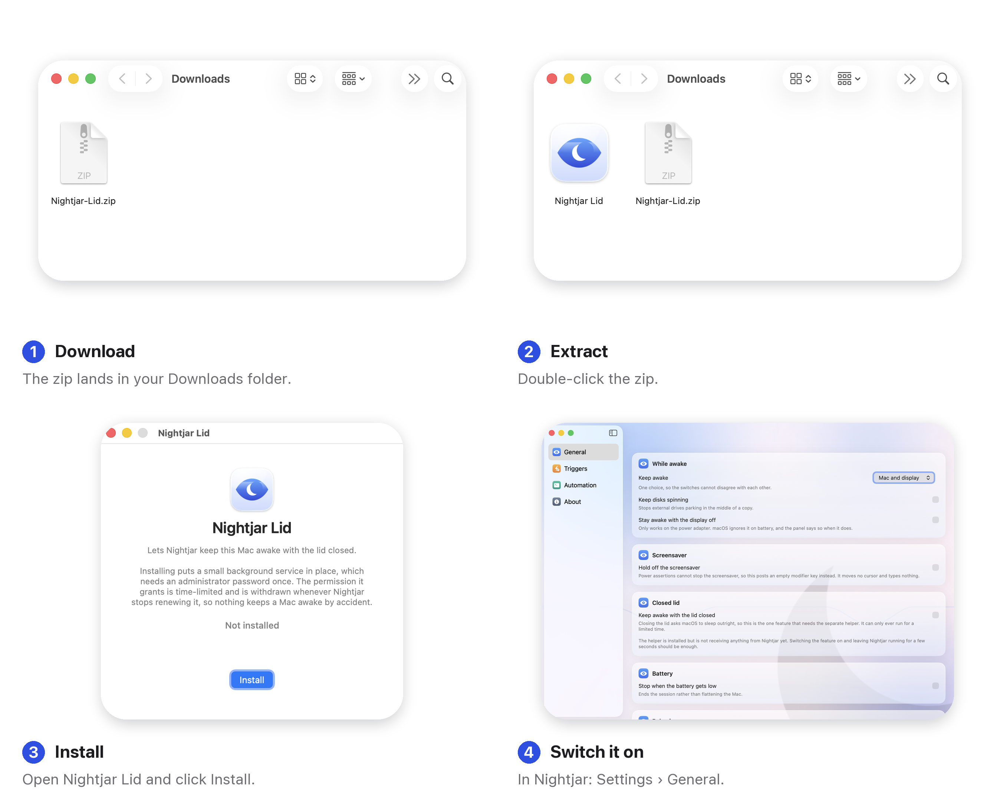

Nightjar
Nightjar Lid, 덮개 닫힘 도우미
덮개를 닫아도 깨어 있게
덮개를 닫는 것은 명시적인 잠자기 지시이고, App Store의 어떤 앱도 이를 무시할 수 없습니다. 이 작은 무료 도우미는 할 수 있습니다. 따로 내려받는 이유는 Apple이 App Store 앱에 권한 있는 도우미 설치를 허용하지 않기 때문이지, 비용이 들어서가 아닙니다.
문제가 생겨도 안전한 쪽으로 동작하도록 만들었습니다. 권한은 시간이 정해져 있고, 몇 초마다 갱신되며, Nightjar가 멈추거나, 배터리가 떨어지거나, 충전기가 뽑히거나, 8시간이 지나면 거둬집니다. 실수로 Mac이 깨어 있는 일은 없습니다.
Nightjar Lid 다운로드
macOS 14 이상 · Apple 실리콘 및 Intel · 무료 · 모든 버전
설치 방법

- 내려받은 파일의 압축을 풀고 Nightjar Lid를 여세요.
- Install을 클릭하고 암호를 입력하세요. 작은 백그라운드 서비스를 설치하기 위해 macOS가 한 번 요청합니다.
- Nightjar에서 설정 › 일반을 열고 덮개를 닫아도 깨어 있게 하기를 켜세요.
나중에 제거하려면 응용 프로그램 폴더에서 Nightjar Lid를 열고 Remove를 클릭하세요. 제거하기 전에 설정을 되돌리므로 Mac이 잠들 수 없는 상태로 남는 일은 없습니다.